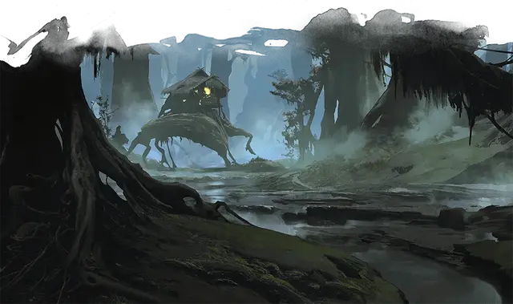

Избушка на курьих ножках
Baba Lysaga’s Creeping Hut
Громадный Конструкт, без мировоззрения

Класс Доспеха 16 (природный доспех)
Хиты 263 (17к20 + 85)
Скорость 30 футов
| мод | спас | ||
|---|---|---|---|
| СИЛ | 26 | +8 | +8 |
| ЛОВ | 7 | −2 | −2 |
| ТЕЛ | 20 | +5 | +9 |
| мод | спас | ||
|---|---|---|---|
| ИНТ | 1 | −5 | −5 |
| МДР | 3 | −4 | +0 |
| ХАР | 3 | −4 | +0 |
Иммунитет к урону психическая энергия, яд
Иммунитет к состояниям окаменение, ослепление, отравление, сбивание с ног, паралич, глухота, испуг, ошеломление, истощение
Чувства слепое зрение 120 футов, пассивное Восприятие 6
Опасность 11 (7200 опыта)
Бонус мастерства +4
Особенности
Восприимчивость к антимагии. Избушка становится выведенной из строя, пока волшебный самоцвет, который её оживляет, находится в поле антимагии. Если она станет целью рассеивания магии, избушка должна будет пройти спасбросок Телосложения со сложностью, равной сложности спасброска от заклинаний сотворившего рассеивание и, при провале, потерять сознание на 1 минуту.
Осадный монстр. Избушка наносит удвоенные повреждения предметам и сооружениям.
Действия
Мультиатака. . Изба совершает три атаки корнями. Одна из них может быть заменена на атаку камнем.
Корень. . Рукопашная атака оружием: +12 к попаданию, досягаемость 60 футов, одна цель. Попадание: 30 (4к10+8) дробящего урона.
Камень. . Дальнобойная атака оружием: +12 к попаданию, дистанция 120 футов, одна цель. Попадание: 21 (3к8+8) дробящего урона.
Описание
Баба Лысага построила избушку на гнилом пне огромного дерева, сваленного давным-давно. Но лишь после того, как она поместила внутрь волшебный самоцвет, избушка обрела некое подобие жизни. По велению Бабы Лысаги избушка выдёргивает свои гигантские корни из земли и может передвигаться, будто паукоподобное чудище, сотрясая землю вокруг с каждым шагом. Избушка атакует размахивая и пытаясь наступить своими корнями. Она также может использовать их для того, чтобы метать камни.
Внутренне убранство избушки. Избушка представляет собой 15-футовую квадратную лачугу с покатой соломенной крышей. Мебель внутри прибита к полу, потому что избушка сильно раскачивается при ходьбе.
Сердце избушки. Самоцвет, который дал жизнь избушке Бабы Лысаги ранее был зарыт на винограднике Винного Волшебника. Самоцвет был одним из трёх камней, которые магией вдыхали жизнь в лозы виноградника, что гарантировало производство лучших сортов вин. Баба Лысага украла один из самоцветов и извратила его магию, использовав её для оживления своей избушки.
Удаление самоцвета из избушки делает её недееспособной. Впрочем, это легче сказать, чем сделать. Сияющий самоцвет находится в выемке на пне, расположенной под прогнившими половыми досками избушки. Половые доски можно вырвать, преуспев в проверке Силы Сл 14, или разбить, нанеся им 10 урона. Как только доски будут убраны с пути, существо может добраться до самоцвета. Но если кто-то попытается сделать это, когда избушка будет оживлена, в выемке вырастают деревянные зубы, а сама она становится пастью, которая пытается откусить всё, чем пытаются удалить самоцвет. Существо, пытающееся удалить самоцвет должно для этого пройти проверку Ловкости Сл 20. При успехе проверки, существо успевает выхватить самоцвет не попав в пасть. При провале спасброска, существо получает колющий урон 10 (3к6) от укуса и ему не удаётся завладеть самоцветом.